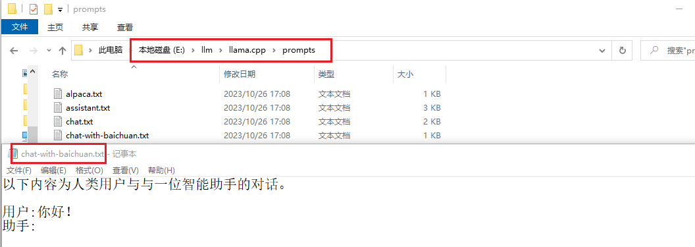

GitHub - ggerganov/llama.cpp: Port of Facebook's LLaMA model in C/C++，这个项目只能膜拜啊,😍😍😍。这是有胆儿搞
下面先看一下那些让人爽歪歪的
本笔记是ChatGLM2-6B - xiaodu114.github.io的后续，还是先根据这篇准备好环境吧！机器必须还是我的老朋友。
虽然先遇到了你，但是前期遇到了编译失败等一些问题，所以就先有了她：chatglm.cpp - xiaodu114.github.io，看看这里是怎么安装
# 你想把项目放到哪个目录下，在该目录下进入命令行
git clone https://github.com/ggerganov/llama.cpp
这里将项目下载到
说明：这里的仓库是今天（2023-10-26）下载的。
cmake -B build
# 上面的命令 cmake -B build 成功之后，执行下面这个
cmake --build build -j --config Release
编译的时候，虽然还是一大堆黄色，但是比以前淡定多了，毕竟看的多了。之前用同样的方式，编译时会报错，建议使用
这里准备一下该项目的Python部分
# 创建虚拟环境
python -m venv venv
# 激活虚拟环境
.\venv\scripts\activate
pip install -r requirements.txt
注意：安装完依赖之后，先别着急关掉啊！后面有小弟要表演，请耐心等待。
大佬已到位。他的小弟可真不少啊，下面我们挑几个遛遛：
百川：让我先来，让我先来，我来了，哈哈！下面请看我的表演。
这个下载就比
git lfs install
git clone https://modelscope.cn/baichuan-inc/Baichuan2-7B-Chat.git
接着上面创建的Python虚拟环境，赶紧表演吧，已经等不及了。
# convert.py文件在 llama.cpp 项目的根目录
# 下面命令会在相同的目录下生成转换之后的文件，这里是：ggml-model-f16.gguf
# 暂时还有去确实是否有指定输出目录的参数
python convert.py D:\llm\baichuan-inc\Baichuan2-7B-Chat
# 首先找到 llama.cpp 项目编译之后生成一堆exe的文件夹，之后执行如下：
.\quantize.exe D:\llm\baichuan-inc\Baichuan2-7B-Chat\ggml-model-f16.gguf D:\llm\baichuan-inc\Baichuan2-7B-Chat-GGUF\ggml-model-q4_0.gguf q4_0
# 更多参数的使用，还得多去官网逛逛啊
# 第一问
.\main.exe -m D:\llm\baichuan-inc\Baichuan2-7B-Chat-GGUF\ggml-model-q4_0.gguf -p "What's your name？"
# 第二问
.\main.exe -m D:\llm\baichuan-inc\Baichuan2-7B-Chat-GGUF\ggml-model-q4_0.gguf -p "你叫什么名字?"
都说
开始以为
.\main.exe -m D:\llm\baichuan-inc\Baichuan2-7B-Chat-GGUF\ggml-model-q4_0.gguf `
--color -i -c 4096 -t 8 --temp 0.5 --top_k 40 --top_p 0.9 --repeat_penalty 1.1 `
--in-prefix-bos --in-prefix '[INST]' --in-suffix '[/INST]' -p `
"[INST] <<SYS>>\nThe following is a conversation between a human user and an intelligent assistant.\n<</SYS>>\n\n你叫什么名字? [/INST]"
补充：开始还不明白这里的
这里还发现一个问题，咱得老老实实的按照官网的例子来，要不容易出现乱码😅😅😅。你在看看这个例子：
# 下面的txt文件，llama.cpp项目中就有啊
.\main.exe -m D:\llm\baichuan-inc\Baichuan2-7B-Chat-GGUF\ggml-model-q4_0.gguf -n 256 --repeat_penalty 1.0 --color -i -r "User:" -f "E:\llm\llama.cpp\prompts\chat-with-baichuan.txt"
先看一下上面说的txt文件的内容，如下图：

从上面的截图可以看出：中文应该没有问题。但是这里也发现了一个问题，就是俩人一直在对话（我没问啊），不知道啥时候结束，就直接强制停止了，后面有时间研究一下。
安装之后，首先设置一下模型目录
之后就可以对话了。当然还需要选择要给模型，如果不支持，她会告诉你的：
还有很多关于模型的参数配置后面慢慢研究。她还支持